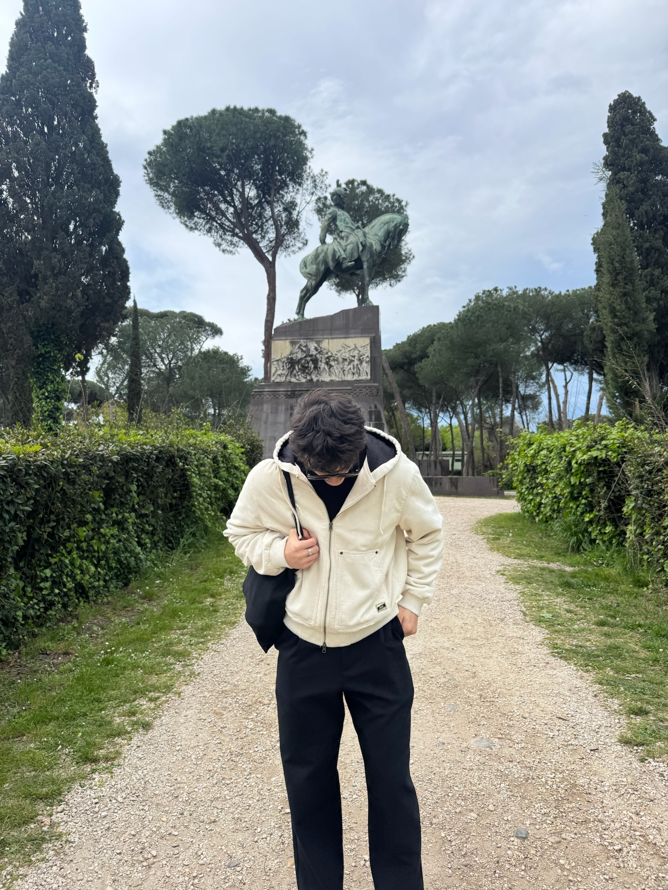

Viena darba nedēļa Datorikas fakultātes studenta dzīvē
Redzama katra studenta diena un ieskats tajās. Par katru dienu īsi aprakstīts, kāds parasti ir dienas plāns, ar ko students nodarbojās un tamlīdzīgi.

Izvēlies dienu!
Lietojiet bultiņas, lai pārvietotos starp dienām
Par darbu
Šis ir personīgs ieskats vienā nedēļā Datorikas nodaļā — no pirmdienas rīta lekcijas līdz piektdienas vakaram. Katra diena ir savs stāsts ar saviem izaicinājumiem, mazajām uzvarām un brīžiem, kad nekas nestrādā vai viss strādā kā vajadzētu.
Visi teksti, fotogrāfijas un ilustrācijas ir autora paša veidoti. Mērķis nav rādīt ideālu studenta dzīvi, bet gan godīgi parādīt, kā tā izskatās ar visu, kas tai pieder.